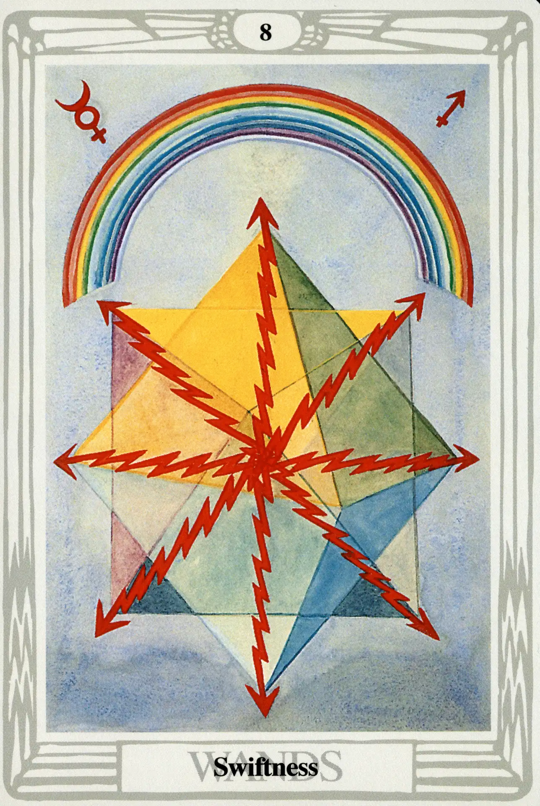

Wands
Eight of Wands
Swiftness

(Mercury in Sagittarius)
0° to 10° Sagittarius
November 23 to December 2
Original Title: Lord of Swiftness.
Golden Dawn Model: Four hands (two from each side of the card) appear from clouds; clasped in two pairs in the center with the grip of the First Order. They hold eight wands, crossed four with four. Flames appear where wands meet.
King Scale for Hod: Violet.
The Four Scales for Mercury: Yellow; Purple; Grey; Indigo, rayed Violet.
The Four Scales for Sagittarius: Blue; Yellow; Green; Dark vivid Blue.
Formula: 8 (Hod) of Wands (Atziluth) + Mercury in Sagittarius = SWIFTNESS
If this card doesn't electrocute you, it may tickle you to death. Harris departs dramatically from the Golden Dawn model, and offers us a portrait of energy becoming matter: “Light-wands turned into electrical rays, sustaining or even constituting Matter by their vibrating energy.” Without mentioning Einstein or the formula e=mc, Crowley goes so far as to state, “This card, therefore, represents energy of high velocity, such as furnishes the master-key to modem mathematical physics.”
Swiftness is the perfect title for this card, because it represents everything that requires speed and a high-frequency level to hold together, whether that be a business endeavor, a romance, or the sum of all the matter in the universe. All this is fine and good, but what does all that mean when this card appears in a tarot reading? Let's look at the formula.
Mercury is in Sagittarius, where the element fire has become stabilized, and is eminently comfortable. This partnership is doubly energized by being in Hod, the sphere of Mercury. Even Hod's low and unbalanced position on the Tree of Life does little to diminish the intense activity of this almost overly stimulated coupling. This card is like two people who have had too much coffee who stay up all night, talking simultaneously. A lot may be said. A lot may be learned. But, inevitably, they are both going to crash.